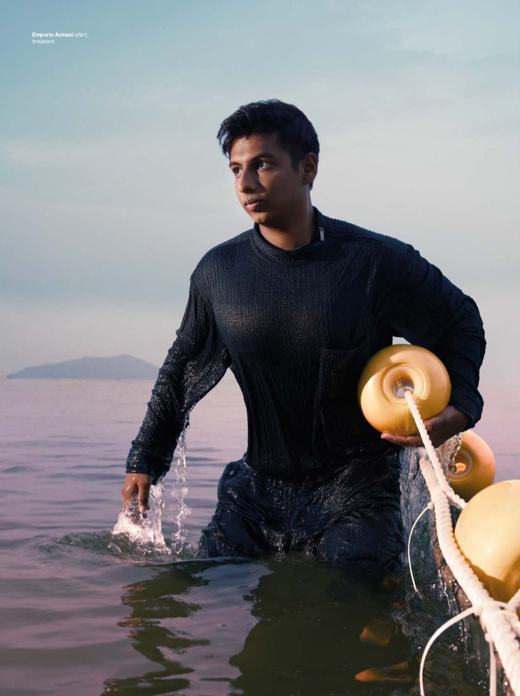
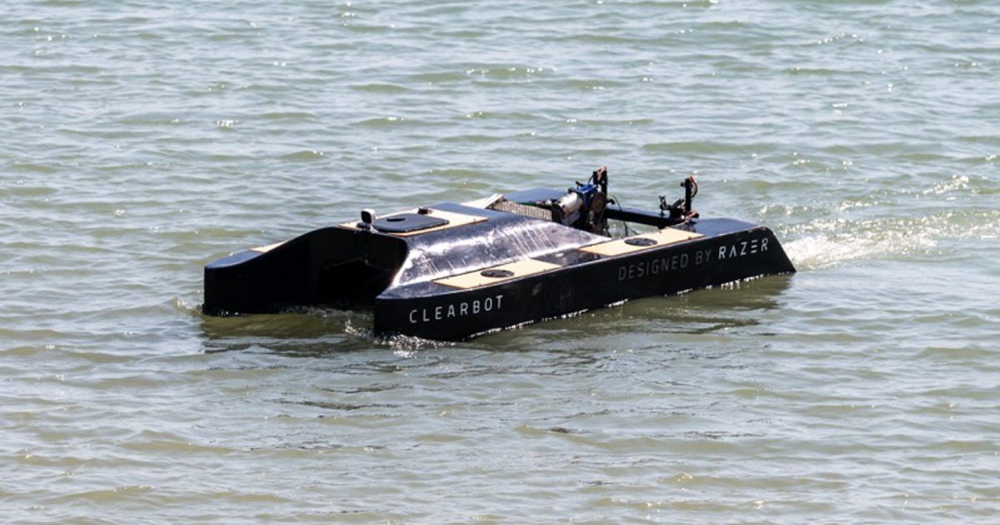

Hi! I'm Sid
I use robotics to solve the world's biggest problems.
My mission is to build robotic solutions that help augment humanity because I believe it is what we need to reach the next stage of our evolution.
Check out my TEDx talk!
At my company Clear Robotics, we build artificially intelligent robot boats.
I also hold a Guinness World Record for building the world's fastest robotic fish.

Clear Robotics
We've taken the company from an idea on a beach in Bali to over 1M USD in ARR, operating 30+ boats and ships across 6 countries daily, venture backed by Alibaba, Razer and the Singapore government. In 2023, we were featured on Forbes 30 Under 30 Asia list (Industry, Manufacturing & Energy) for our work at Clear Robotics!
More about Clear RoboticsPortfolio
Play
Media
Talks, TV and press coverage, from a 5-inch walking robot built at age 15 to Clear Robotics on CNA in 2025!